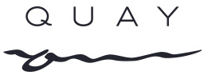

Menu
Events
Gallery
News
Write to us
A progression of rare and beautiful ingredients where texture, flavour and harmony is paramount. Delve into the Quay dining experience with Peter Gilmore's Menu and a thoughtfully curated Wine List by Head Sommelier, Wilem Powell.
Peter's appreciation of nature's diversity and his endless experimentation in the kitchen and garden are the driving forces in his cooking. Peter leads the Quay team with a focus on excellence, innovation and hospitality.
Celebrate at one of Australia’s most awarded restaurants, with panoramic views encompassing the Sydney Harbour Bridge and Sydney Opera House. From intimate dinner parties in the Private Dining Room, to long lunches in the spectacular Upper Tower, to large cocktail events in The Green Room – Quay delivers an immersive dining experience with views like no other.

Father's Day at Quay Celebrate the father figure in your life with an exceptional dining experience on Sydney Harbour.
The opportunity wine enthusiasts have been waiting for – Quay is unlocking the private dining room for guests to bring.
We are thrilled for the return of our four-course lunch menu, The Quay to Lunch. Join us on weekends to.
BEST CHAMPAGNE AND SPARKLING WINE LIST AUSTRALASIA In the World of Fine Wine World's Best Wine Lists Awards 2023, Quay.

RESTAURANT AWARDS 2023 “The service is warm, the views unbeatable and the overall sense of understated luxury profound. Peter Gilmore's flagship continues to.
Peter's Korean Chicken Soup Recipe and photography from The Great Australian Cook Book Serves 6 Ingredients 1.8kg whole free-range!
To book a table, you need to fill out the form on the right. Our staff will contact you.
Select a date: